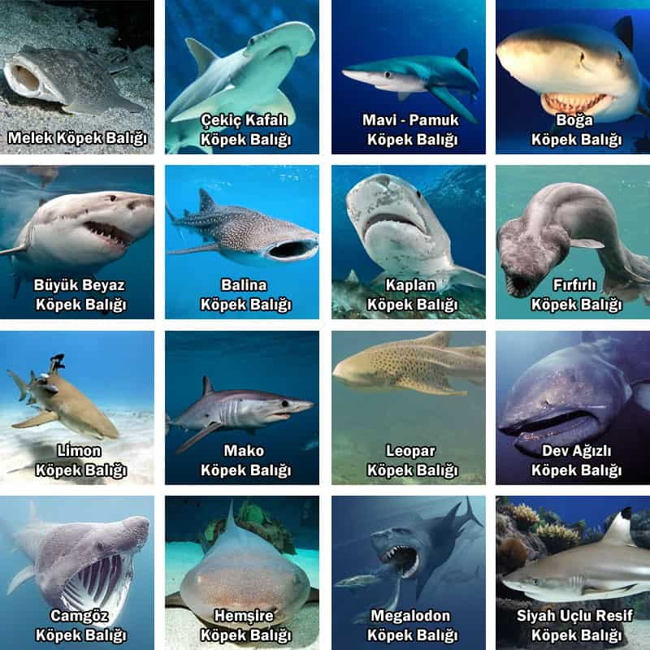

Köpek Balığı Türleri
Çoğu insanın korksa bile hayranlık duyduğu köpek balıkları, en eski fosil kalıntılarına göre 400 milyon yıl öncesinden beri okyanuslarda yaşayan büyük bir balık grubudur. Kıkırdaklı balıklar sınıfında yer alan köpek balıkları; kıkırdaklı bir iskelet, beş veya altı çift solungaç ve birkaç sıra diş gibi spesifik özelliklere sahiptir. Yaklaşık 400 tür köpek balığı, dünya okyanuslarında yaşamlarını sürdürmektedir. Bunlar arasından en fazla bilinen köpek balıkları türleri ve özellikleri şunlardır.
| Köpek Balığı Türleri | Uzunluk | Ağırlık | Habitat |
| Büyük Beyaz Köpek Balığı | 7-8 Metre | 8 Ton | Türkiye’de Akdeniz, Ege ve Marmara kıyılarında bulunabilir. |
| Balina Köpek Balığı | 10 Metre | 20 Ton | Genelde tropikal denizler olmak üzere tüm okyanuslarda görülür. |
| Boğa Köpek Balığı | 4 Metre | 450-600 kg | Tuzlu ve tatlı suda yaşar. |
| Limon Köpek Balığı | 3,6 Metre | 90-183 kg | Okyanusun sığ sularında yaşar. |
